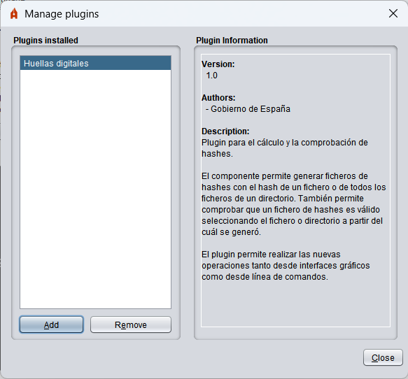

Autofirma integrates a simple plug-in system that allows users to integrate plugins developed by themselves or by third parties into their signature processes. These plugins allow you to integrate a pre-process of the data before signing, a post-process after signing and different operations detached from the signing process but which can have as input the data charged by the user, the generated signature, the certificates used to sign or the certificates themselves contained in the signatures. These processes only act on the signature and bulk signature operations carried out through the Autofirma interface. They do not apply to the signatures requested from a web browser or via a command line.
NOTE: Some functionalities previously integrated in Autofirma, such as calculating and checking hashes, are now distributed in the form of plugins. To access these features from the Autofirma graphical interface, the context menu of the operating system or command line will need to install these plugins.
To manage the plugins installed in Autofirma, access the management panel via the "Tools" → "Manage Plugins" option in the application menu bar. From this panel you will be able to install, uninstall, configure and consult the information from the plugins.

This box shows a list of plugins currently installed in Autofirma. You can press the "Add" button at the bottom of the list to install a new plugin or the "Remove" button to uninstall the selected plugin from the list. Installing and uninstalling plugins has immediate effect. When selecting a plugin from the list, the information from it will be displayed in the "Plugin Info" panel.
This panel displays the information from the selected plugin in the list "Installed Plugins". This information has the version number of the plugin, the authors, the contact information and a description. Some of these data may be omitted if the plugin does not report them.
Optionally, if the plugin allows, a "Set up" button can appear at the bottom of the panel. This button opens the configuration dialog defined by the plugin itself. If a plugin does not support settings, this button will not appear.
Plugins can define certain permissions and perform various tasks for installation and uninstallation. Some plugins may not work until the application is restarted.